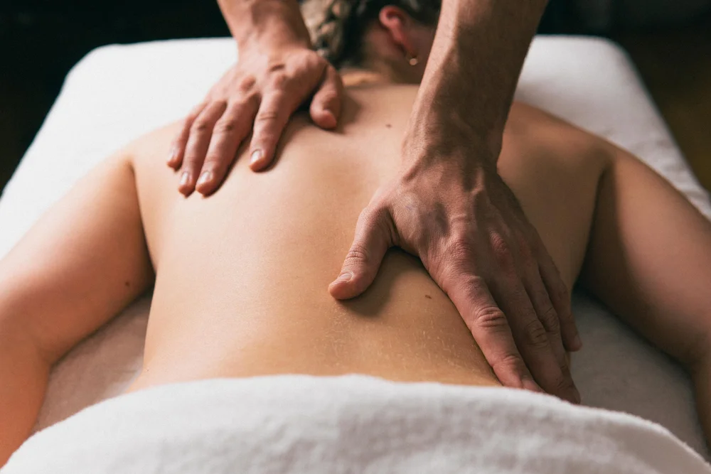

01
Klasična masaža
Gre za masažo bolj rahlega pritiska. Njen namen je splošna sprostitev ter sprostitev mišic, izboljšanje krvnega in limfnega obtoka, hitrejše odplavljanje metabolnih produktov. Masaža ne predstavlja nobenih bolečin saj drugače lahko pride do mišične napetosti in ob tem ne pridemo do željenih rezultatov.
Naročite se · 040 580 902Indikacije
- Izboljšanje krvnega in limfnega obtoka
- Hitrejše odplavljanje metabolnih produktov
- Zmanjšanje oteklin
- Za boljšo in hitrejšo rehabilitacijo
- Povečanje delovne sposobnosti mišic
- Izboljšanje sklepne gibljivosti
- Povečanje elastičnosti, odpornosti in vitalnosti kože
- Zmanjšanje stresa in izboljšanje psihičnega počutja
Kontraindikacije
- Pri lokalnih vnetjih
- Pri kožnih obolenjih
- V primeru varikoznega sindroma
- Pri svežih in odprtih ranah
- Pri akutni travmi
- Pri hujši arterijski hipertenziji
- Pri povišani telesni temperaturi
- Pri obsežnih oteklinah zaradi srčne in ledvične insuficience
- Pri malignih tumorjih
- Če bi z masažo izzvali bolečino ali mišični spazem
- Pri težjih mentalnih stanjih